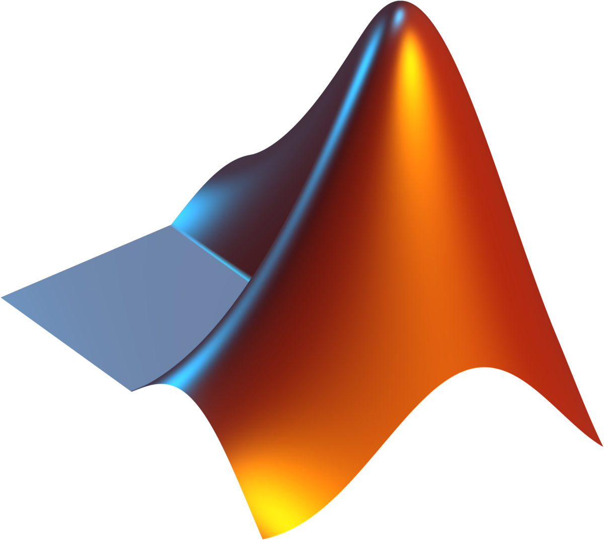
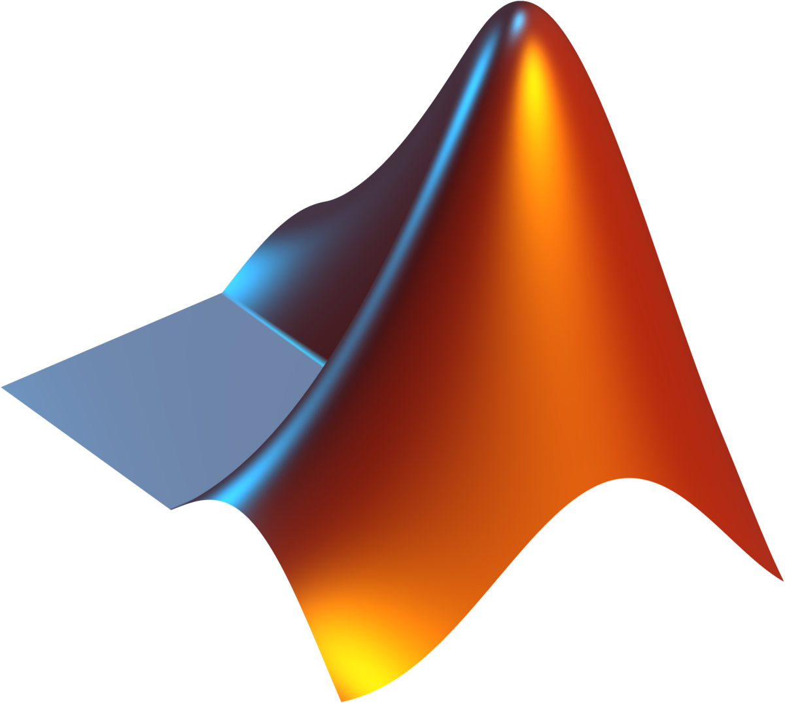

I have hands-on experience with all the technologies shown above. My SystemVerilog expertise includes FPGA development and digital design verification. For embedded systems, I'm proficient in C programming for microcontroller applications. I use MATLAB extensively for algorithm development, data analysis, and simulations. My hardware skills include PCB design with KiCad and 3D modeling with SolidWorks. I also have web development skills with HTML/CSS for creating interactive interfaces and project documentation.
Mesa Diode
Analyzed mesa-structured diodes using advanced characterization techniques to study layer composition and interface quality. Performed cross-sectional SEM imaging and EDS analysis to examine material layers and doping profiles.
Conducted comprehensive electrical testing including IV and CV measurements to evaluate breakdown characteristics and junction properties. Correlated structural features with electrical performance to understand device behavior under different bias conditions.
2024VUV Lithography
Developed vacuum ultraviolet (VUV) lithography techniques for patterning acrylic substrates at 172nm wavelength. Designed custom photomasks and optimized exposure parameters to achieve high-resolution features.
Characterized the patterned structures using optical profilometry and SEM imaging, demonstrating sub-micron resolution capabilities. This research explored alternative lithography methods for microfabrication without traditional photoresists.
2023Semiconductor Fabrication
This project involved designing and fabricating semiconductor devices in UIUC's cleanroom facilities. I utilized photolithography techniques to pattern nanoscale features, followed by precise deposition and etching processes to create functional MOSFET devices.
The project culminated in comprehensive electrical characterization, where I measured key device parameters including threshold voltage, subthreshold swing, and carrier mobility. This hands-on experience gave me deep insight into the challenges of nanoscale device fabrication and the importance of process control.
2024
Smart Snack Dispenser
An IoT-enabled snack dispenser that uses weight sensors and computer vision to track inventory and consumption patterns. I developed the embedded firmware in C and designed a companion mobile app that provides nutritional analytics and restocking alerts.
The mechanical design features a novel anti-jamming mechanism I developed using SolidWorks and 3D printed components. The system integrates with campus dining services through a custom API, demonstrating my full-stack development capabilities from hardware to cloud integration.
2023Street Fighter 2 on FPGA
Implemented a hardware-accurate version of Street Fighter II using SystemVerilog on a Xilinx Artix-7 FPGA. The project involved reverse-engineering the original arcade hardware's custom chips and recreating their functionality in HDL.
Key achievements included developing cycle-accurate implementations of the CPS-1 sprite renderer and sound processor, while optimizing for modern FPGA architectures. The project demonstrates my deep understanding of both digital design and retro gaming hardware architectures.
2024RC Vehicle
A high-performance RC vehicle with autonomous navigation capabilities. I designed the PCB in KiCad, featuring a STM32 microcontroller with custom motor control algorithms and sensor fusion for precise navigation.
The mechanical chassis was optimized using SolidWorks FEA tools to achieve the best strength-to-weight ratio. The project combines my skills in embedded programming, circuit design, and mechanical engineering to create a complete electromechanical system.
2023Python Game Mechanics
Implemented a hardware-accurate version of Street Fighter II using SystemVerilog on a Xilinx Artix-7 FPGA. The project involved reverse-engineering the original arcade hardware's custom chips and recreating their functionality in HDL.
Key achievements included developing cycle-accurate implementations of the CPS-1 sprite renderer and sound processor, while optimizing for modern FPGA architectures. The project demonstrates my deep understanding of both digital design and retro gaming hardware architectures.
2024
My personal website
A high-performance RC vehicle with autonomous navigation capabilities. I designed the PCB in KiCad, featuring a STM32 microcontroller with custom motor control algorithms and sensor fusion for precise navigation.
The mechanical chassis was optimized using SolidWorks FEA tools to achieve the best strength-to-weight ratio. The project combines my skills in embedded programming, circuit design, and mechanical engineering to create a complete electromechanical system.
2023